Devlog Twenty Overview
This devlog update will mostly be fixing and changing some of the things that I personally didn't like about the Alpha One version of the game. It's a lot of small stuff. The next few devlogs will mostly be for adding in proper feedback suggestions. Also this devlog might not have a lot of pictures or videos, so have fun reading.
Main Features
While playing the game for Alpha One, myself and other players were not happy with the amount of missing faces on some of the blocks in the world. It'd get fixed as soon as you mined or placed a block in that chunk, but it was still very distracting. Anyways, I think I finally managed to at least put a bandaid on the problem. I haven't noticed the problem creeping up anywhere anymore, so hopefully it's fixed enough. (I have no idea what's causing the problem)
This next bit is just a funny oversight. I realized that the player had no way to get wheat in the game (I also changed the item hay to wheat). Wheat is kinda helpful for crafting a lot of the foods in the game. So I made it where Short Grass and Tall Grass now have a small chance of dropping Wheat when the player mines them. Oh, I also added in Wheat Seeds as well. You can craft them from putting wheat in a crafting table.
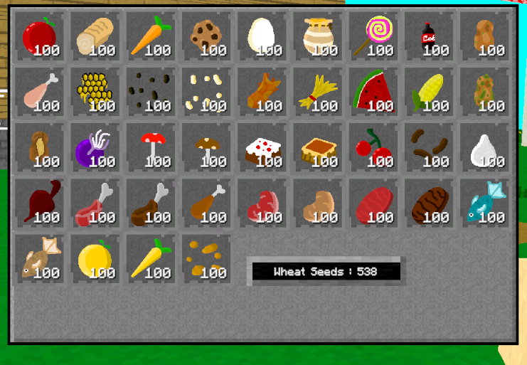
Here is another funny oversight. Emeralds don't really have a purpose yet, except maybe for fancy building. But there was no way to get them because I forgot to make it where Emerald Ore actually drops the emeralds. That has been fixed now.
When playing the Alpha One version of the game, I decided that stone tools and wooden tools are too slow. So I made it where they mine slightly faster.
Back to another oversight I had. There was no way to get Cocoa Beans before. Now there is a small chance to get them from Jungle Leaves. I might make a block version of them in the future, but not right now.
Playtesters and I noticed we were having problems with food (Hint for next devlog maybe). So I realized there wasn't enough early game options for this. So I made it where the Small Red and Brown Mushroom plants are edible and fill 1 hunger slot.
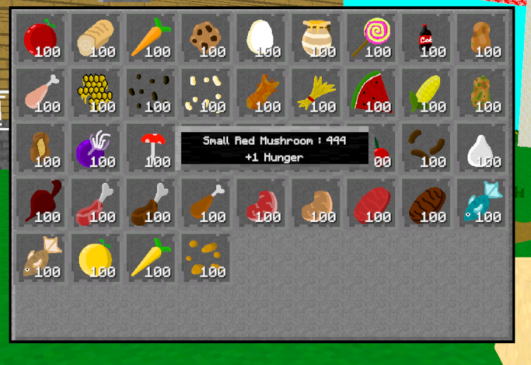
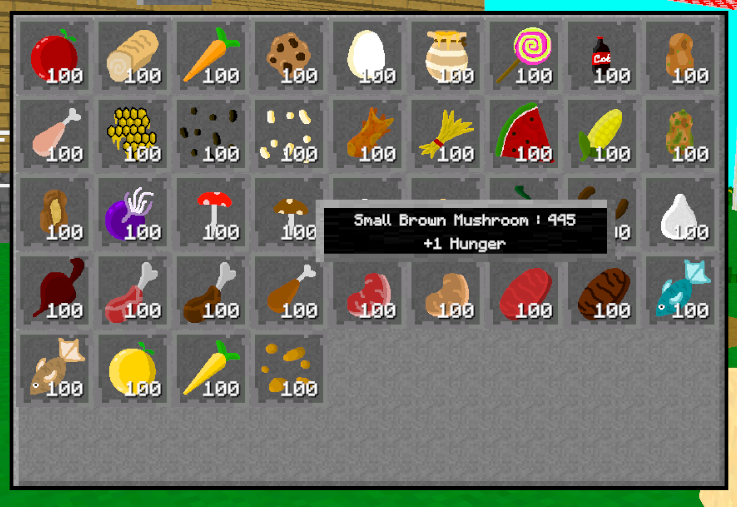
This next bit is just something stupid I didn't think about. I had it where all blocks in the game could rotate when the player places them. This is nice in theory, but is kind of annoying in practice. So I made it where only chosen blocks can rotate.
Gravel was a block that I could've sworn spawned in the world. But I was wrong. So, now it'll spawn underground with other stone types. Now the player can get gravel, flint, and craft the flint and steel. Cool.
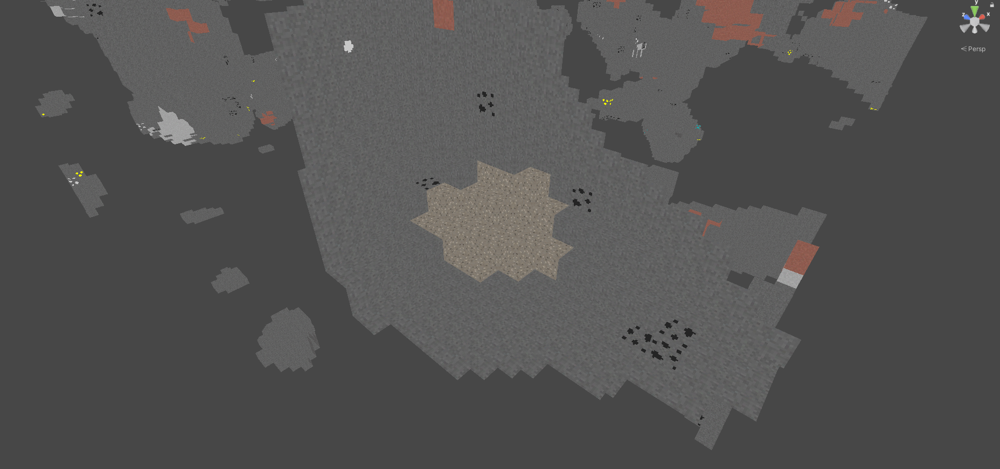
Pressing the Escape key before would instantly close the game. I forgot to take this out. It has been removed now. You're welcome.
During playtesting, I realized that Shears are way too slow when chopping leaves. So I dramatically sped them up.
Nobody was really happy with how long the game took to load. I'm working on stuff in the background to make stuff more optimized, don't worry. But for the actual game loading, I finally added back in the Main Menu as the first scene loaded. I also made it look a little nicer as well. This should help the game load faster. Also the background to the main menu is just a house I built while playtesting. And the text at the bottom of the screen will display something random from a list of options I wrote up.
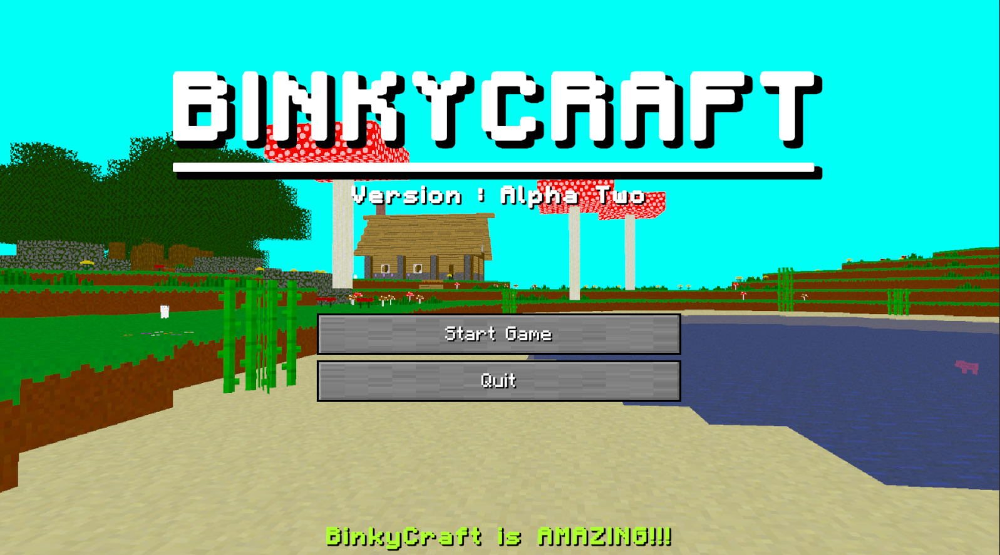
Some of the playtesters wanted an actual button in the menus to close the menus. I had this before on some of the menus, but removed it and made it where pressing e would close the menus. Now either the button on the menu or pressing e will close the open menu. Related to this, I changed the button to open the inventory. I was U and now it's E. There was some hidden glitches related to this, that I hope will have been fixed now as well.
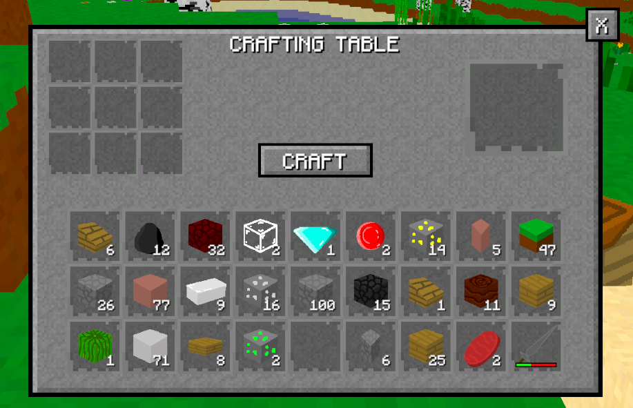
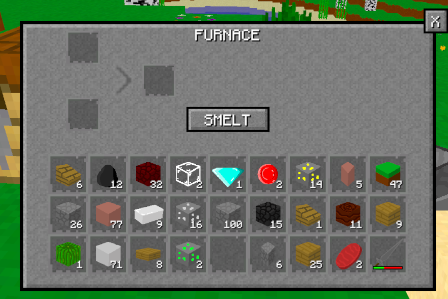
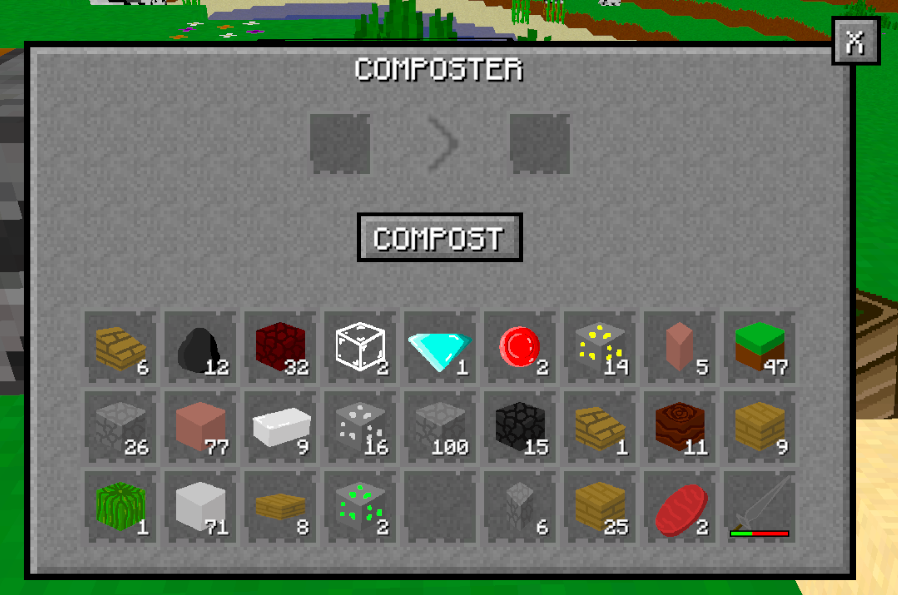
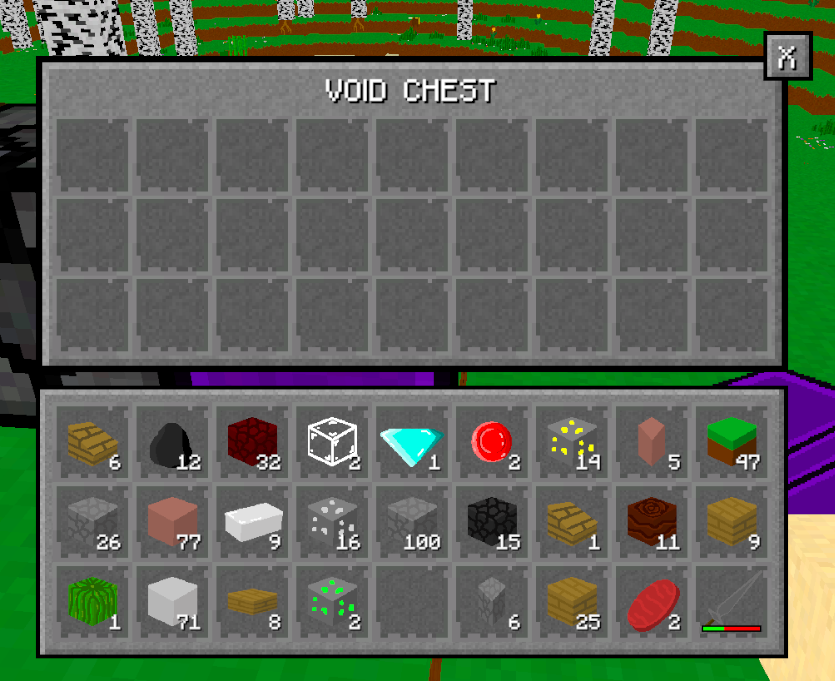
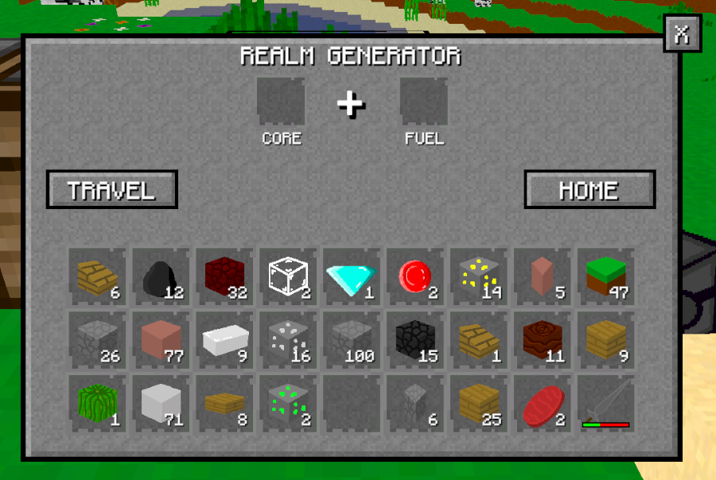
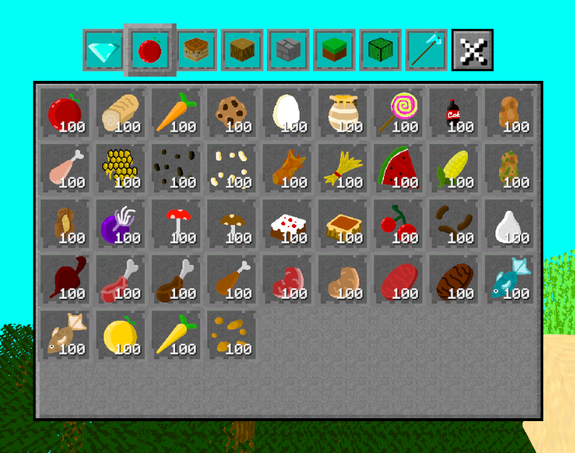
Bonemeal was an item in the game, but it was very hard to get. The only way was to kill a wolf and get a bone to craft into bonemeal. And that's not only difficult to do for a single bone, but it's also annoying. So I added in the brand new composter. This block can turn plants and stuff into bonemeal. The composter is now currently the best way to get bonemeal, and will be an important feature to already have in the game for when I make the farming update.
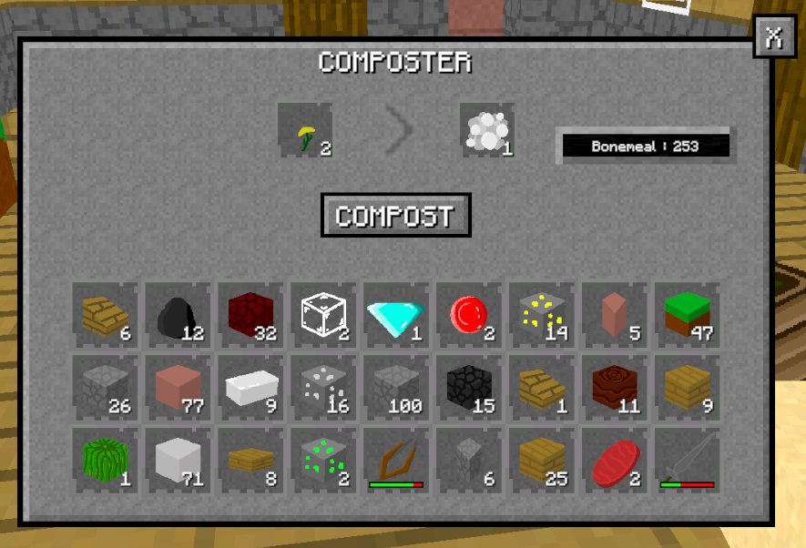
I had it in the game where a player can change a block from one to another. Like a log to a stripped log. Well, now I made it where you can use other tools to change the block to a whole other one as well. Meaning a player can now turn grass into a path block with a shovel, or farm land with a hoe. This is something that really should've been in the game earlier.
Finally! The last bit changed or added. It's been a lot. Anyways, Bees are finally back in the game. I was having some problems with them for a little, but now that's been fixed.
Ha! I snook one last thing in here. Using bonemeal on a cherry bush will now get the player some cherries. Another simple food source.
Blocks
The only new block in this entire update is the Composter. Which is a very nice looking block in my opinion.
Recipes
There has been some recipes added into this update. I'll show them off here. And of course, I'm going to put them onto the recipes section of this website.
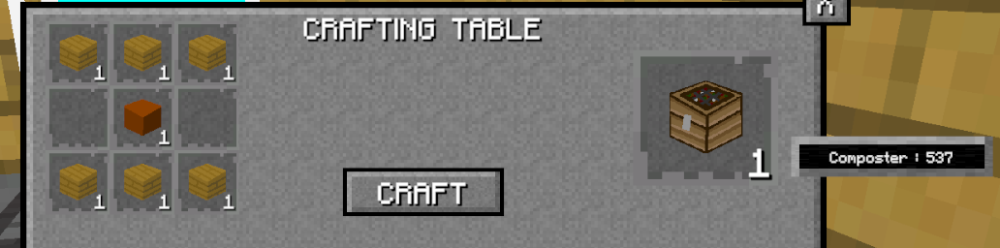
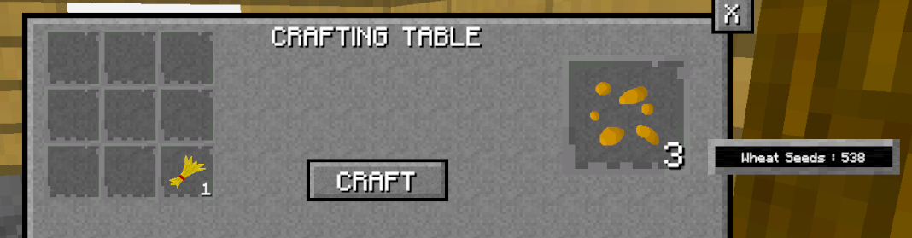
Conclusion
I was going to wait a few weeks before posting another devlog, but I just have so much motivation right now. So, I'm just going to keep working. I still might take it a little slower for the next bit though as I rake in more reviews and ideas from playtesters.
This devlog update really fixed a lot of the small issues in the game. And I'm sure the next several devlogs will be the same. Still gonna try to center them around a theme though. My favourite part about this devlog update is just how much stuff I completely forgot to add into the game. Like gravel and wheat. That's funny to me.
By the way, I already have the next devlog planned out, so I'm going to start working on that soon. It's going to be a very useful one, let me tell you. I gave a small hint to it's theme a little earlier on the page as well.